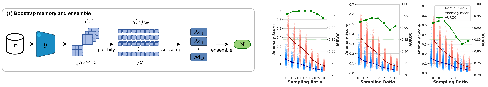
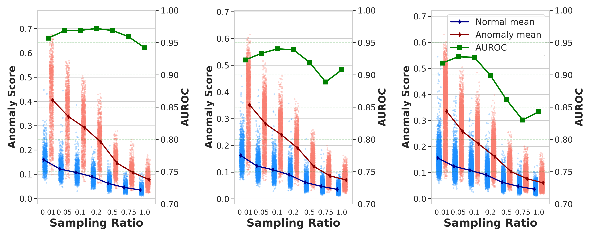
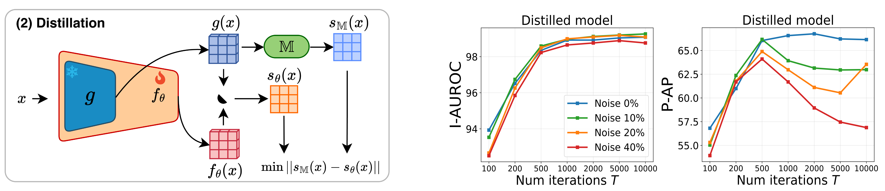
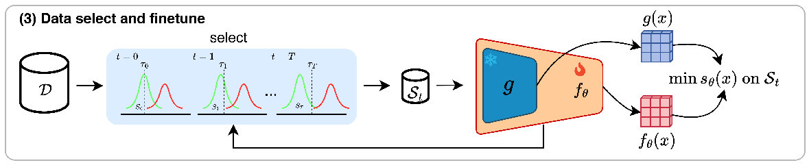
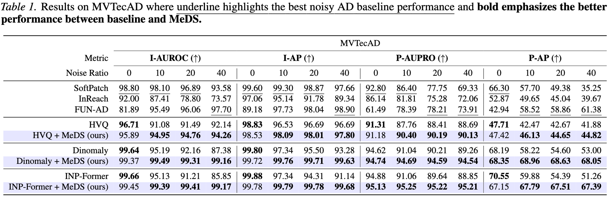
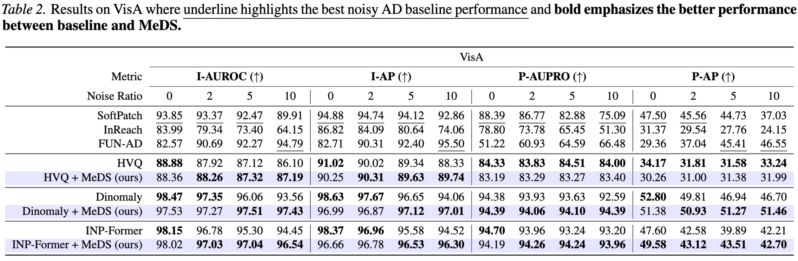
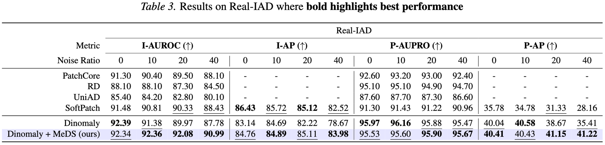
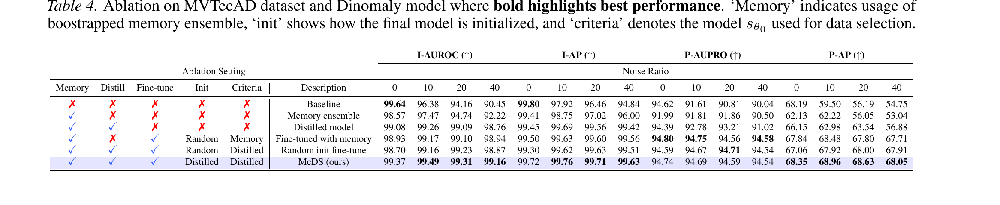
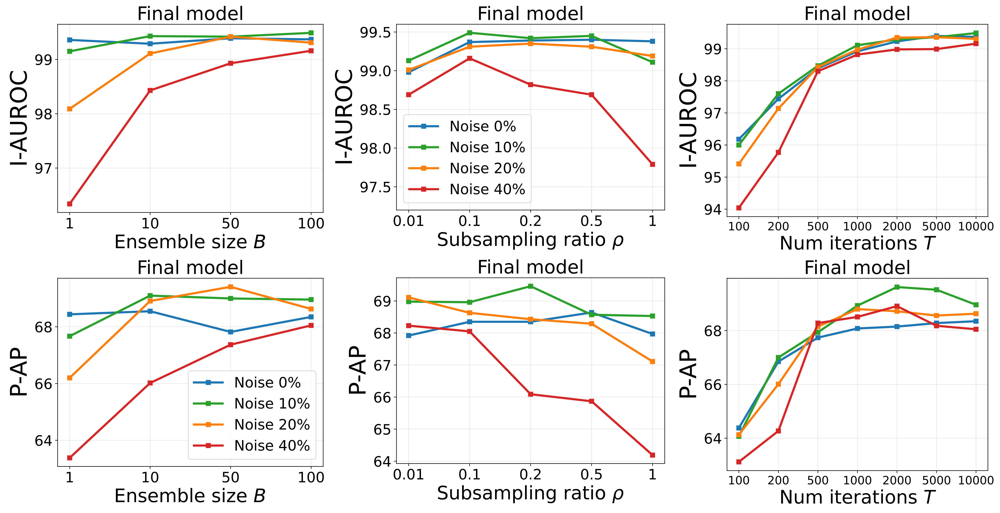
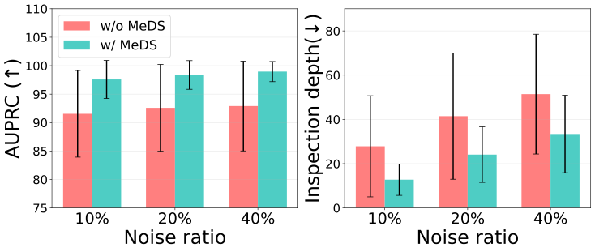

Anomaly detection (AD) under data contamination is critical for deploying unsupervised defect detection in industrial environments, where curating perfectly clean training sets is impractical. However, existing methods are sensitive to contamination, suffering significant performance degradation as the noise ratio increases. In this paper, we propose Memory-Distilled Selection (MeDS), a training algorithm based on data selection. MeDS constructs an ensemble of partial memories via random subsampling, where the resulting sparsity acts as a low-pass filter that captures nominal patterns across a wide range of noise ratios, enabling coarse-level identification of contaminated samples. The aggregated distances to the bootstrapped memories are then distilled into a reconstruction score network, which is subsequently fine-tuned on clean data filtered using scores from the distilled model, enabling fine-grained localization of anomalies. MeDS is robust across a wide range of noise ratios without requiring noise-ratio-specific hyperparameter tuning, achieving 99.16% image-level AUROC on MVTecAD at a 40% noise ratio, and attaining state-of-the-art performance on both VisA and Real-IAD under noisy settings. We thoroughly verify the efficacy of MeDS on industrial AD benchmarks under noisy data scenarios, accompanied by in-depth empirical analyses.
To catch defective products automatically, an anomaly detector first learns what “normal” looks like from a pile of factory images. The problem: in the real world that pile is never perfectly clean — a few defective images always slip in unlabeled — and most detectors quietly break down as this contamination grows, unless you already know how much there is and hand-tune for it.
MeDS stays robust across contamination levels with no per-setting tuning, using a three-step recipe: (1) get a rough but noise-resistant read on which samples look suspicious, (2) sharpen that signal by distilling it into a small trained network, and (3) repeatedly retrain on the cleanest samples it can find — progressively earning precise, pixel-level defect localization.

The idea. A memory bank stores little snapshots (patch features) of the training images. To score a new patch, we measure how far it is from its nearest neighbor in the memory — far away means “unfamiliar,” which usually means a defect. The catch under noisy data: if defective patches sneak into the memory, defects start to look normal and the detector is fooled.
Our fix. Instead of one big memory, we build an ensemble of \(B\) small memories, each from a different random \(10\%\) subsample of the features, and average their scores. Because each memory is sparse, it only reliably captures the patterns that show up often — the normal ones — and “blurs out” rare defect patterns. In short, sparse subsampling acts like a low-pass filter: defects end up far from every memory and stand out, whether contamination is light or heavy.
\[ S_{\mathbb{M}}(x) \;=\; \frac{1}{B} \sum_{b=1}^{B} s_{\mathcal{M}_b}(x) \]
Why there is a sweet spot (Theorem 1). Make the memory too large and defects leak in and look normal; too small and even ordinary patches look unfamiliar. Theorem 1 makes this precise: the expected gap between how far anomalous vs. normal patches sit from the memory,
\[ \Delta(m) \;:=\; \mathbb{E}\!\left[D(q_{\text{anom}}, \mathcal{M})\right] - \mathbb{E}\!\left[D(q_{\text{norm}}, \mathcal{M})\right], \]
is always positive and is maximized at a moderate memory size \(m\) (formally, it is governed by a weight function that is unimodal in \(m\)). So there is an appropriate subsampling ratio that drives normal and abnormal features as far apart as possible.

Theorem 1 in practice (at \(10\%/20\%/40\%\) noise): the gap between normal (blue) and anomaly (red) scores — and the resulting AUROC (green) — peaks at a small-to-moderate subsampling ratio, exactly the predicted sweet spot.
One limitation: these features come from a frozen, general-purpose encoder, so this read is only coarse — good enough to flag which images are contaminated, but not yet precise enough to outline a defect pixel by pixel. Steps 2 and 3 fix that.

The idea. The Step 1 scores are robust but coarse, because they rely on a frozen encoder. So we train a small student network (a reconstruction model \(s_\theta\)) to reproduce the memory scores — but now learning directly from the factory images, so it picks up domain-specific detail the frozen encoder missed and amplifies the gap between normal and defective patches.
Why it doesn’t just memorize the defects too. Neural networks learn the dominant, repeated patterns first and only memorize rare ones later (the “early-learning” effect). Since normal patches are the majority, the student lowers their scores earlier and more than the rare defective ones — effectively denoising the memory signal for free.
The catch. Train too long and the network eventually memorizes the defects as well, hurting fine pixel-level accuracy; stop too early and it is under-trained for precise localization (see the graph on the right). Distillation alone can’t have it both ways — which is exactly what Step 3 resolves.

The idea. Use the Step 2 model to pick out the cleanest-looking images and fine-tune only on those. This lets the model keep training — getting sharper at outlining defects — without ever overfitting to the contaminated samples. We alternate (select → train), fine-tuning \(s_\theta\) on the progressively selected clean subset \(\mathcal{S}_t\):
\[ \min_{\theta}\; \frac{1}{|\mathcal{S}_t|} \sum_{x \in \mathcal{S}_t} s_\theta(x) \]
Selection that self-corrects. A sample is kept when its score \(\eta_t(x)\) falls below a threshold \(\tau_t\). Early on, selection trusts the original distilled model and keeps only clearly-normal samples; as training improves, it leans on the current model and admits more samples — a positive feedback loop where a better model yields a cleaner subset, which in turn yields a better model.
\[ \eta_t(x) \;=\; (1 - \alpha_t)\, \max_{h, w} s_{\theta_0}(x)_{hw} \;+\; \alpha_t\, \max_{h, w} s_{\theta}(x)_{hw}, \qquad \alpha_t = \min\!\left(1,\; \tfrac{2t}{T}\right) \]
\[ \tau_t \;=\; \operatorname{Median}\!\left(\eta_t(x)\right) + k_t \cdot \operatorname{MAD}\!\left(\eta_t(x)\right), \qquad k_t = k\!\left(\tfrac{t}{T}\right) \]
Here \(\max_{h,w} s(x)_{hw}\) is the image-level score, \(s_{\theta_0}\) is the fixed initial (distilled) model and \(s_\theta\) the current one, \(\alpha_t\) gradually shifts trust from the initial to the current model over the \(T\) iterations, and the threshold \(\tau_t\) — built from the robust median and \(\operatorname{MAD}\) (median absolute deviation) — loosens as \(k_t\) grows. The payoff: precise pixel-level localization that stays robust at any contamination level, with no noise-specific tuning.
We evaluate MeDS on three industrial benchmarks — MVTecAD, VisA, and Real-IAD — under contamination, following each dataset’s noisy-data protocol (MVTecAD at \(10/20/40\%\) noise, VisA at \(2/5/10\%\), plus the clean \(0\%\) case, and the official noisy setting for Real-IAD). The takeaway: where prior methods degrade as contamination rises, MeDS holds its accuracy — reaching 99.16% image-level AUROC on MVTecAD even at 40% noise — and sets state-of-the-art on VisA and Real-IAD under noise. It also works as a plug-in: dropped on top of existing detectors (HVQ, Dinomaly, INP-Former), it boosts their noise robustness with almost no cost on clean data.

Table 1 — MVTecAD. Image-level (I-AUROC, I-AP) and pixel-level (P-AUPRO, P-AP) scores at \(0\!-\!40\%\) noise. The top rows are dedicated noise-robust detectors (SoftPatch, InReach, FUN-AD); below, MeDS is added on top of three modern backbones (HVQ, Dinomaly, INP-Former), and bold marks the winner of each baseline-vs-MeDS pair. Adding MeDS improves every backbone under noise — at only marginal cost on clean (\(0\%\)) data — and the gap widens as contamination rises: Dinomaly’s image-level AUROC falls to \(87.4\%\) at \(40\%\) noise, while Dinomaly + MeDS holds 99.16%, with the biggest gains on the hardest pixel-level metric (P-AP).

Table 2 — VisA. The same comparison at VisA’s noise ratios (\(0/2/5/10\%\)). MeDS once more lifts all three backbones on both image- and pixel-level metrics, with the largest improvements at the highest contamination — reproducing the MVTecAD trend on a second dataset.

Table 3 — Real-IAD. Evaluated under Real-IAD’s official single-class noisy protocol (a separate model per category, which baselines such as SoftPatch require to scale to its many categories). Dashes mark metrics a baseline does not report (some methods report only a subset of the four image-/pixel-level metrics). Dinomaly + MeDS achieves the best overall balance across image and pixel metrics, and its margin grows with noise — e.g. image-level AUROC of 90.99% vs. \(87.78\%\) for Dinomaly at \(40\%\) noise.
Component ablation (Table 4). Adding MeDS’s three stages one at a time, on top of a Dinomaly backbone, shows that each is necessary. Reading the table top to bottom — from the bare baseline to the full method — the metrics improve at every step, and the gains are largest under heavy noise:
The last rows isolate the fine-tuning design and confirm both halves matter: using the distilled model for both initialization (“init”) and sample selection (“criteria”) beats using the raw memory ensemble or a randomly-initialized model.

Robustness to hyperparameters. A big reason MeDS needs no noise-ratio-specific tuning is that it is insensitive to most of its hyperparameters, and a single fixed subsampling ratio works across every noise level. The figure below sweeps the final model’s image-level AUROC (top row) and pixel-level P-AP (bottom row) against three hyperparameters, with a separate curve per noise ratio (\(0/10/20/40\%\)):


Beyond fully-automatic detection, MeDS doubles as a tool for cleaning datasets. By ranking training images from most- to least-suspicious (using its selection scores), it lets a human reviewer find and remove contaminated samples while inspecting far fewer images — instead of checking every single one. Concretely, MeDS pushes contaminated samples higher up the list (better ranking quality, measured by AUPRC) and shrinks the inspection depth — the fraction of the data you must review to catch all the contamination — cutting annotation effort across every noise level.
@inproceedings{safarov2026meds,
title={{MeDS}: Memory-Distilled Selection for Noise-Robust Anomaly Detection},
author={Sirojbek Safarov and Jaewoo Park and Yoon Gyo Jung and Kuan-Chuan Peng and Wonchul Kim and Seongdeok Bang and Octavia Camps},
booktitle={International Conference on Machine Learning (ICML)},
url={https://arxiv.org/abs/2605.26676},
year={2026}
}